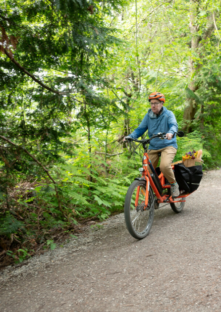

Bicycling is...
Convenient. Walking is limited by distance, and buses follow fixed routes and schedules. A bicycle can take you wherever you want to go, whenever you want.
Efficient. Peddling an easy 10 mph on city streets and trails, you can often cover short distances as quickly as you could drive in a car.
Healthy. Riding a bicycle is gentle exercise that’s good for your heart and easy on your joints. It’s also a great way to improve and maintain your balance.
Fun. Feeling that easy, fluid motion and the breeze on your face is pure joy!
Popular. Perhaps you’ve noticed - Bellingham and Whatcom County residents use their bicycles for transportation in much greater numbers than other places in Washington.
Want to give it a try?
Biking Tips
Bicycling is a great way to get around town for short trips and daily errands. You’ll save money on gas and car repairs while sneaking a bit of fun and exercise into your day. Check out these tips and tricks to share the road confidently and safely with vehicles, pedestrians, and other cyclists: Confident City Cycling Tips for Safe Cycling on City Streets (link to Confident City Cycling PDF - reformat the brochure vertically)
For videos showcasing traffic and safety tips, road positioning, signaling, starting, stopping and shifting visit the League of American Bicyclists YouTube channel.
Bikes on the Bus
Want to get further than you can ride your bike? Consider pairing your bike with the bus. Each WTA bus has a rack that can accommodate up to three bicycles. Stop by the WTA transit center to practice using the bike rack on a parked bus. This video demonstrates how to load your bike onto the bus. (video embedded? Link to WTA YouTube?)
Bike Classes and Education
Bike classes are available, free of charge, to individuals, families, and small groups. Classes include Learn to Ride, Confident City Cycling, Getting the Most out of your E-bike, Basic Bike Maintenance, and more. For a full list of classes and details, visit our Bike Class page.
Smart Trips is available for presentations to any type of group interested in learning more about biking for transportation. Our presentations include details about how to dress for different types of weather, helpful accessories (lights, bags, etc.), maintenance tips, choosing fun and comfortable routes, and the rules of the road. These presentations are perfect for businesses who encourage biking to work, neighborhood associations, school classes, special events, and more.
Smart Trips offers bicycle skills course installation and instruction for elementary school aged children at schools and community events. Skills courses are temporary, and instruction includes learning bike control and the rules of the road. Kids practice stopping at stop signs and navigating intersections.
Maps
We have maps for making Smart Trips. These Bellingham and Whatcom County maps are designed to show you how to reach many of your nearby destinations by walking, bicycling or riding the bus. WTA bus stops and routes are highlighted as well as trails and bicycle routes. The Bellingham map has symbols for grocery stores, pharmacies, mailboxes, and many other destinations. The county map shows hills and areas of caution for bicyclists.
Bellingham MapCounty Map